Banda Sea
Komba to Tanimbar. Kei to Koon.

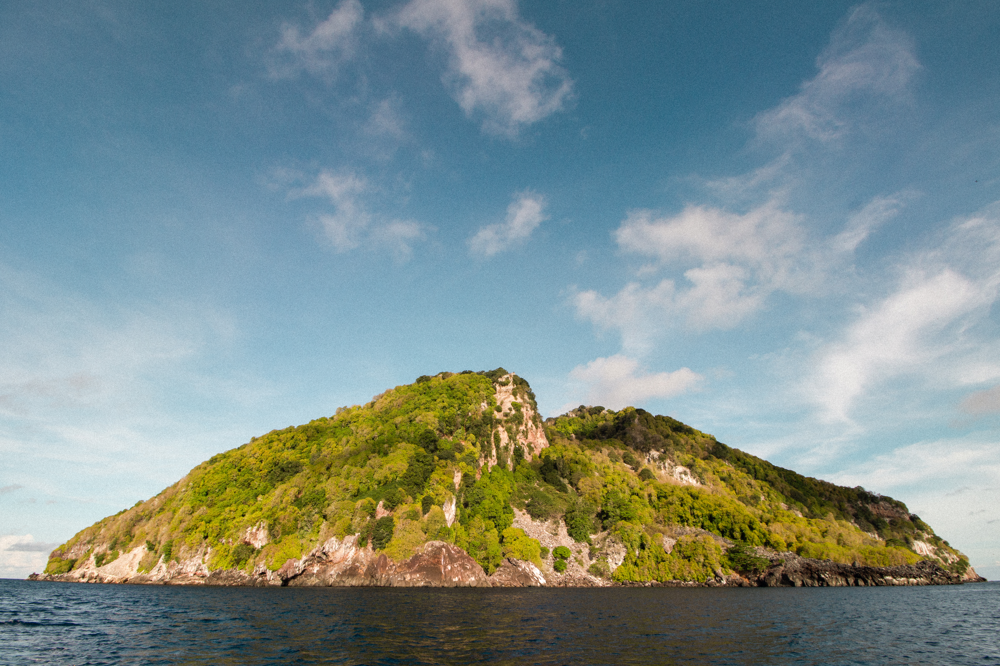
The Banda Sea is the ocean part of Indonesia.
Volcanic islands and isolated reefs rise from some of the deepest water on the
planet, surrounded by vast stretches of open sea.
Out here, every island is an oasis.
Diving:
Schooling hammerheads in season, pelagics on isolated seamounts, sea snake islands, intact reefs and giant sponges, and long stretches of blue water diving.
Topside:
Volcanic cones rising straight out of the ocean, seabird colonies, Tanimbar's stone boats, Kei's beaches and customary law.
What makes it different:
The only region where you dive isolated structures in the middle of one of the deepest seas on the planet, with nothing else for fifty miles.
Seasons we are there:
April, October and November.
Key Infos
SUBREGIONS
Wetar and the Forgotten Islands.
The volcanic specks of Gunung Api, Manuk, Serua,
Teun and Nila. Komba, the lone cone at the
western end that erupts on a schedule of its own
and is dived and watched from a comfortable
distance.
The submerged atolls including Nil Desperandum
and Karang Duisborgh. Tanimbar and Kei islands.
The northern edge towards Koon and the
Watubela group.
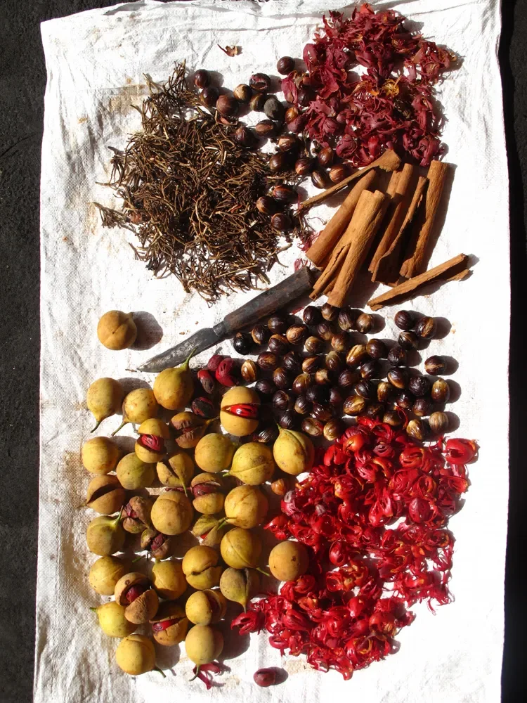
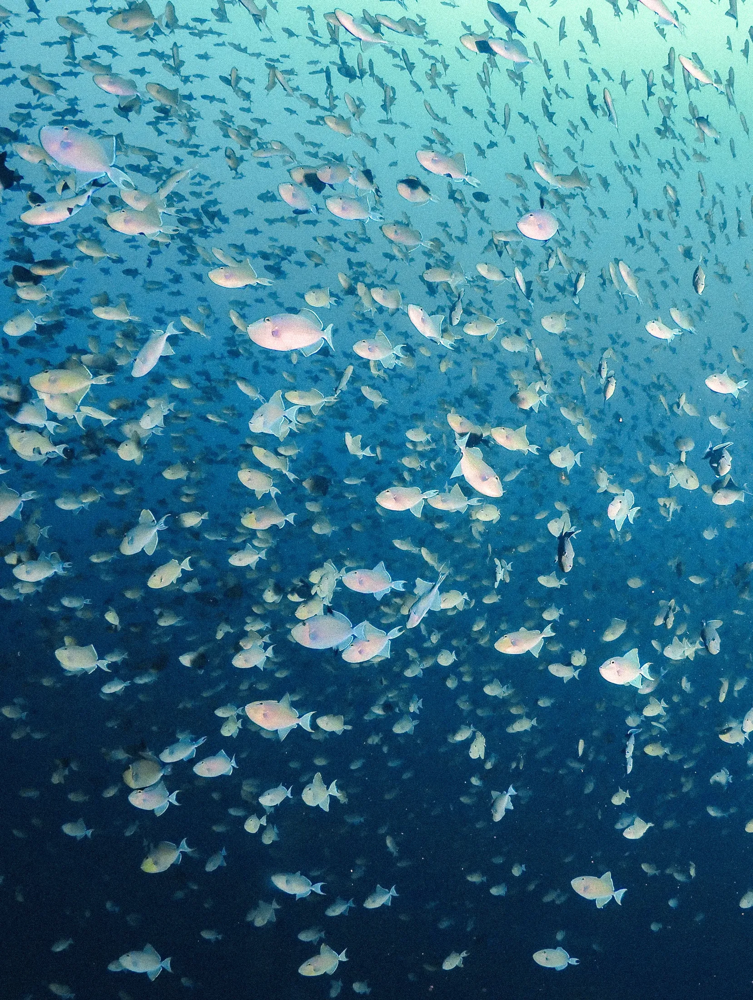
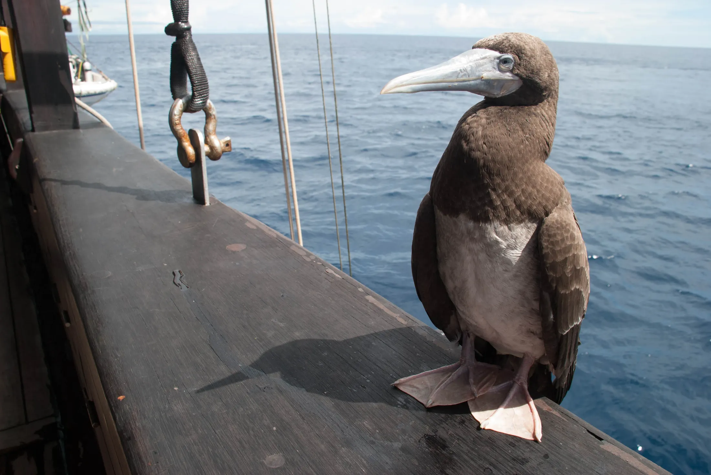
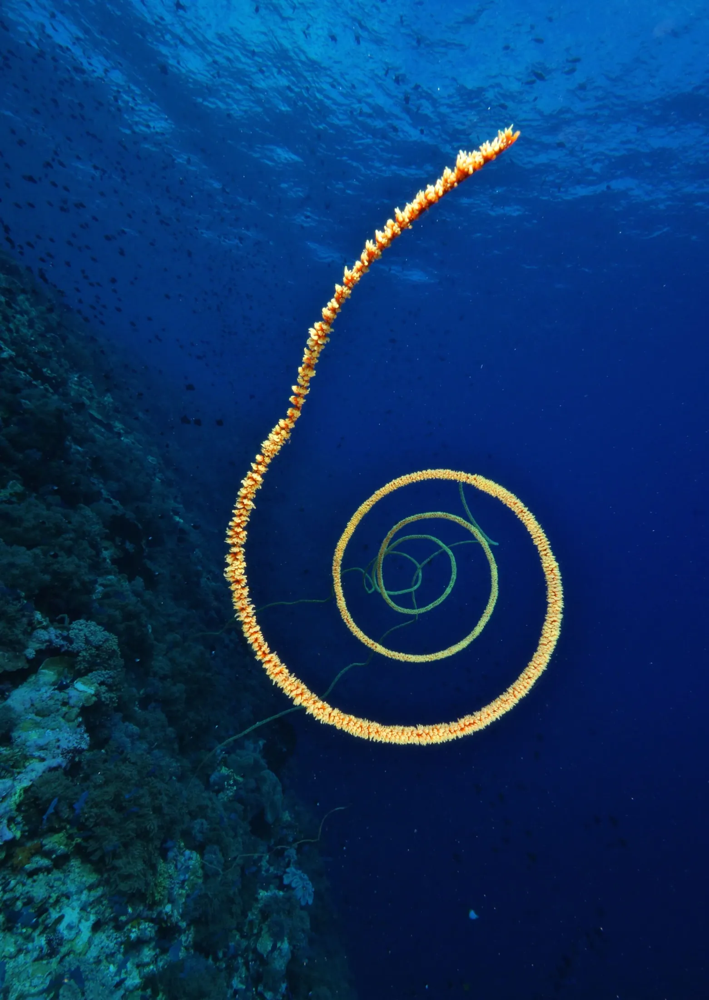
Explore the Banda Sea
Three journeys. One very big sea.

Open Water
This is the ocean part of Indonesia.
The Banda Sea covers around 470,000 square
kilometres and reaches over 7,000 metres at its
deepest, and the Weber Deep at its centre is the
deepest point in the world's oceans outside a trench.
What that means for a diver is simple.
Most of this region is water with nothing in it.
The islands are specks, sometimes a single cone with
a beach, sometimes an atoll that never quite breaks
the surface, and around them there can be eighty
kilometres of open sea in every direction.
You cross a desert to reach an oasis, and everything
alive for miles around knows where that oasis is.
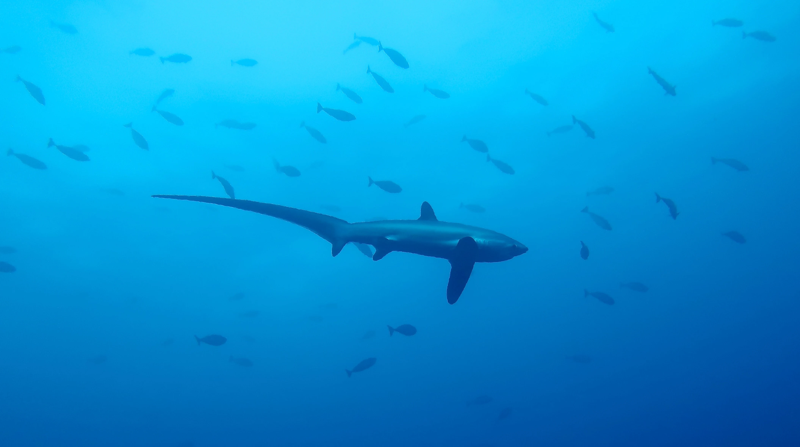
The ocean part
of Indonesia
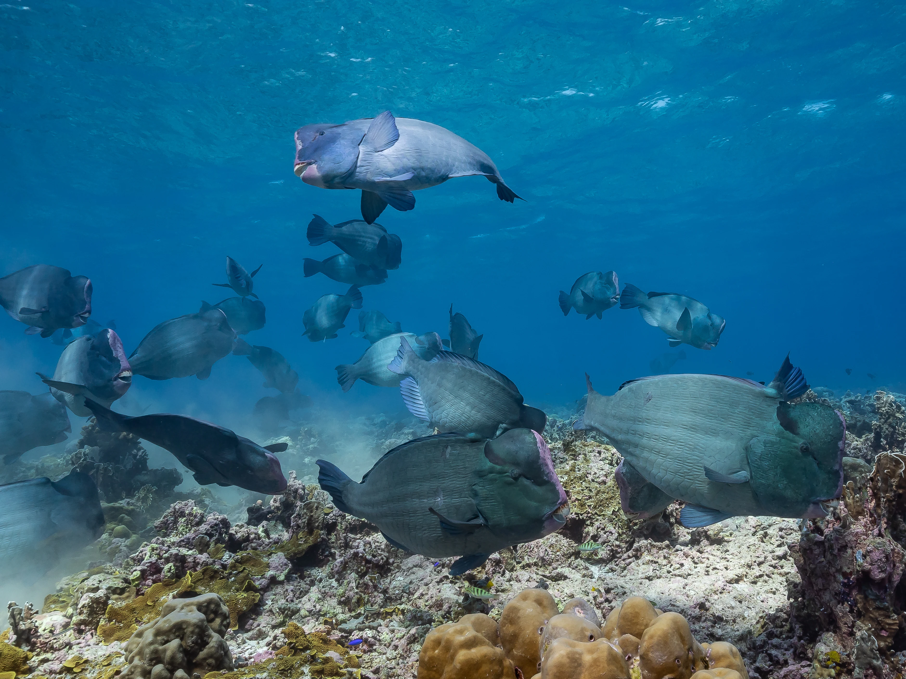
For a long time nobody dived this.
The early liveaboards had Komodo in one direction and Raja Ampat in the other,
and the Banda Sea was the inconvenient gap between them.
Some operators skipped it entirely. Others crossed it twice a year on transitional
trips and put in a dive or two along the way.
That changed once hammerhead schools turned out to be a reliable autumn event
on certain seamounts, and boats started coming here on purpose rather than in
passing. Looking for hammerheads meant spending time on reefs nobody had
bothered with, and the region turned out to have a great deal more going for it
than one shark in one season.
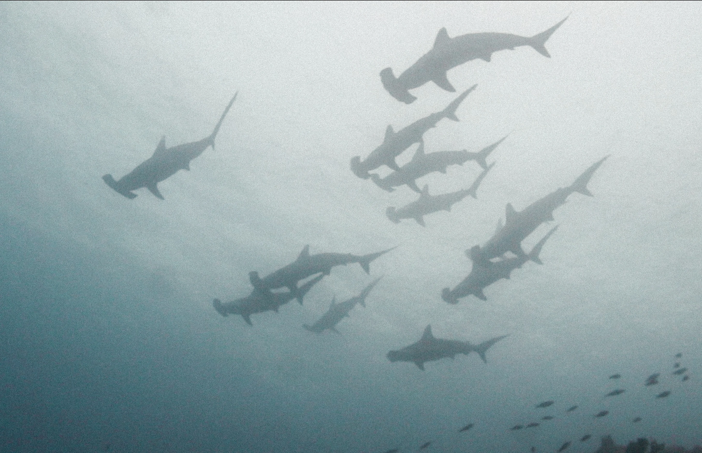
Why Dive
The Banda Sea
A lone structure rising out of very deep water works like a magnet.
Currents hit it, food concentrates, and the animals that spend their lives
wandering the open ocean come in to feed. Late in the year hammerheads
school along these walls and seamounts, sometimes in numbers that
people spend years chasing elsewhere. Thresher sharks come up from the
deep, silvertips and silky sharks patrol the blue, grey reefs work the drop-
offs, and dogtooth tuna, rainbow runners and jacks of every description
move through in waves. Schools of bumphead parrotfish crunch across the
shallows and napoleon wrasse the size of a dinghy watch you from the reef
edge. Then, because so few people have ever dived here, the reefs
themselves are intact: barrel sponges you could climb into, hard coral
gardens running to the surface, and a full complement of reef fish behaving
as though divers are a novelty. It is the region for anyone who wants to
hang in the blue and see what comes.
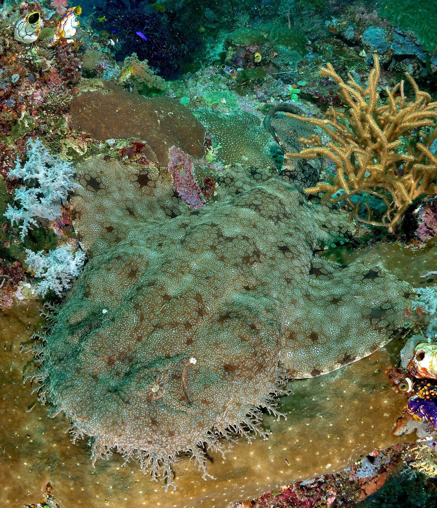
Evolution with the
Door Closed
Isolation does strange things.
On Gunung Api and Manuk, two volcanic islands sitting alone in
very deep water, sea snakes have multiplied into numbers seen
nowhere else and taken up roles in the food web that fish would
normally occupy. They are curious, entirely harmless in practice,
and diving among hundreds of them changes how people think
about snakes within about ten minutes. Above the water the
same islands carry enormous seabird colonies, frigatebirds and
boobies wheeling over the slopes, because a rock in the middle of
an ocean is valuable real estate for anything that flies.
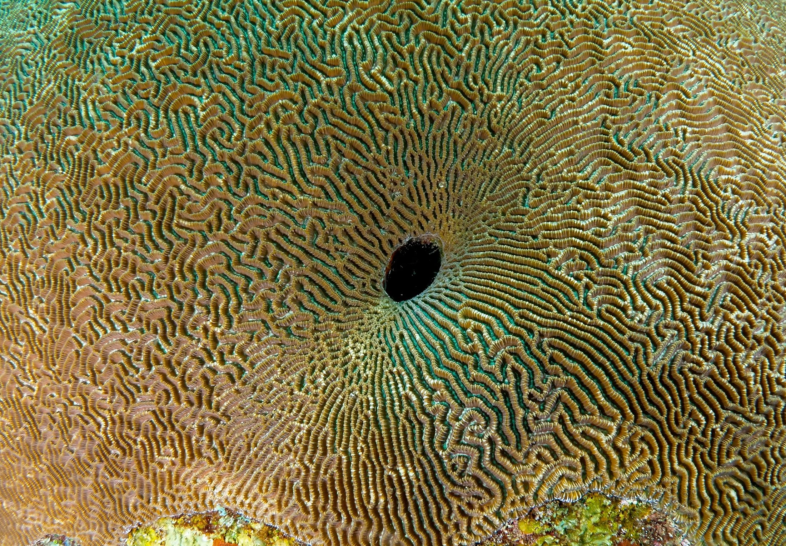
Two Windows
a Year
The monsoons decide everything here. When the east monsoon blows, and again when the west monsoon takes over, this much open water turns rough and stays rough, and diving on exposed seamounts in the middle of it is not on the table. What opens the region are the transitions between the two: roughly April and May, and again from the middle of September into November. Those are the weeks when the sea lies down, the visibility comes up and the isolated sites become reachable. It is also, not coincidentally, when the hammerheads show up. Every departure we run here sits inside one of those two windows, which is why the Banda Sea appears on our calendar twice a year and not more.
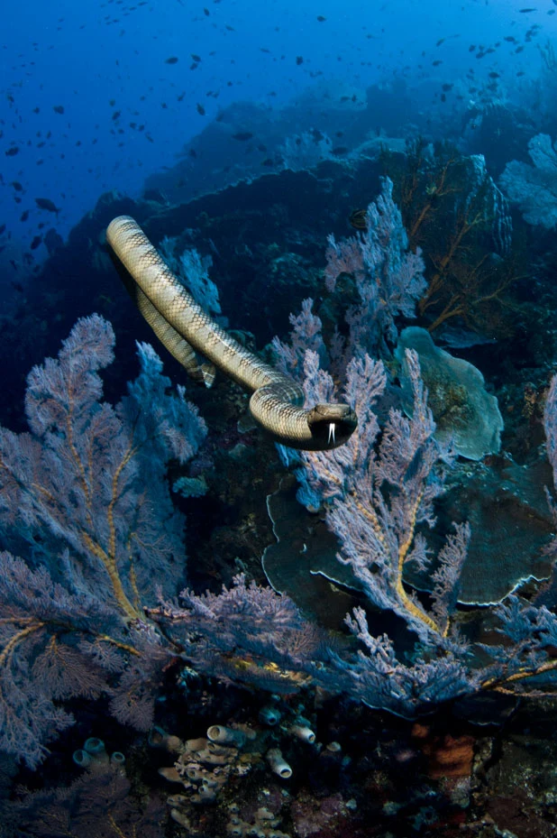
Geology
and Whales
The Banda Arc is a horseshoe of volcanic islands formed where three tectonic plates meet, part of the Ring of Fire, which is why so many of these islands are perfect cones with smoke coming off them and why earthquakes here are routine. The same deep water makes the region important for whales. Sperm whales are present much of the year, blue whales and other migrating species pass through on their way between feeding and breeding grounds, and pilot whales and dolphins are regular company on the crossings.
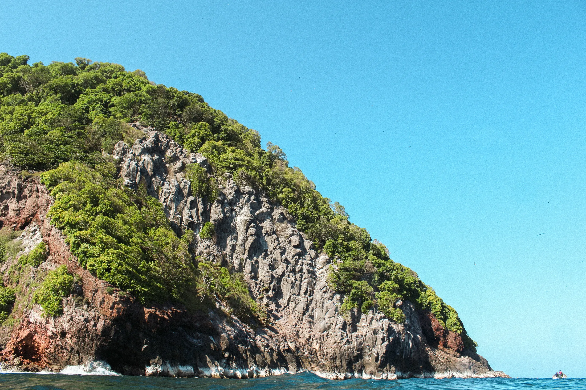
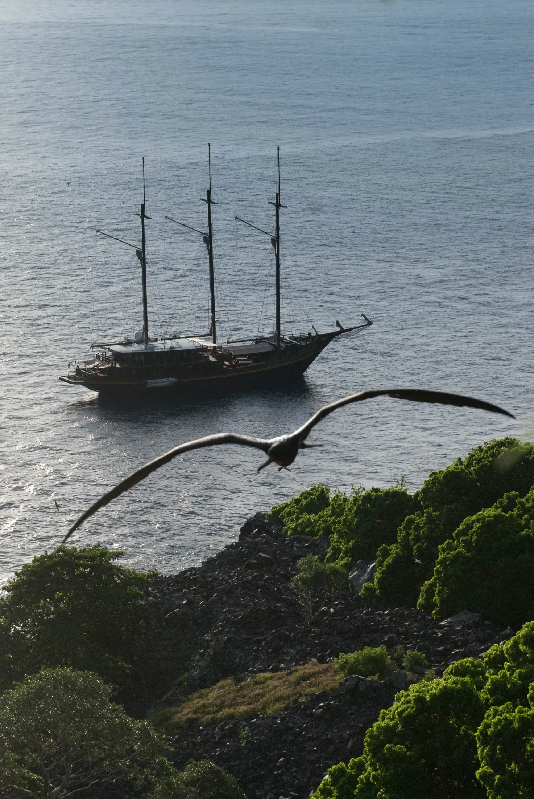
People
on the Edges
Politically this is all part of Maluku province, though on the water it is
the old kingdoms that still matter: Koon, for instance, belongs to one of
them, seated over in the Gorong islands. The spice trade that shaped
this corner of the world was fought over a few small islands a little
further north, and the open ocean part of the region, the tiny isolated
specks scattered across it, was never central to any of that. It was not
untouched either, and people in Tanimbar will tell you that cloves really
began on Nila, a very remote island that almost nobody visits. The
larger islands and archipelagos have strongly distinct cultures:
crocodile veneration on Wetar, the stone boat monuments of Yamdena
in Tanimbar, and in Kei a body of customary law and ceremony that has
survived intact. On some of the tiniest islands there are communities
that have been there for centuries, occasionally speaking a language
found on that island and nowhere else on earth.
Explore other regions
Five ways.
One very big sea.


Ready for your next descent?
More than ten different ways into Indonesia.
And an entire world below the surface.